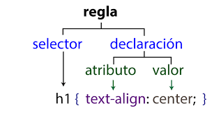

Tema 1:
Syntaxis y selectores CSS
El codigo que se genera en CSS, no es mas que un conjunto de reglas al cual se le asigna a un selector. su sintaxis es simple y es de la siguiente forma: Selector{declaracion[propiedad: valor] } Entre los selectores mas comunes estan:
- Selector universal
-
- Son selectores que aplican reglas generales a todo el documento el cual se puede usar para dar unos formatos uniform,es al documento. Ejemplo
- *{margin:0; padding:0;}
- Selector de etiqueta
-
- Este tipo de selector nos ayuda a aplicar reglas a una etiqueta de forma general. Ejemplo
- p{font-weight: bolder;}
- Selector descendente
-
- Este tipo de selector aplica reglas a los descendientes de una etiqueta especificada, independiente del nivel de anidacion. Ejemplo
- article p{text-align: center;}
- Selector de clase
-
- Este tipo de selector nos permite aplicar reglas CSS a una clase que se puede usar muchas veces en el documento HTML. Ejemplo
- .class{background-color: blue;}
- Selector de ID
-
- Este tipo de selector nos permite aplicar reglas CSS a un id y solo se puede usar una vez en el documento HTML. Ejemplo
- #id{z-index: 99;}
- Selector de hijos
-
- Este selector es similar al selector descendiente con la diferencia de que se usa el simbolo > para seleccionar a sus hijos directos en la que si importa su nivel de anidacion. Ejemplo
- div > img{width: 70%;}
- Selector de atributos
-
- Ejemplo
- a[href="https://example.org"]{color: green;}